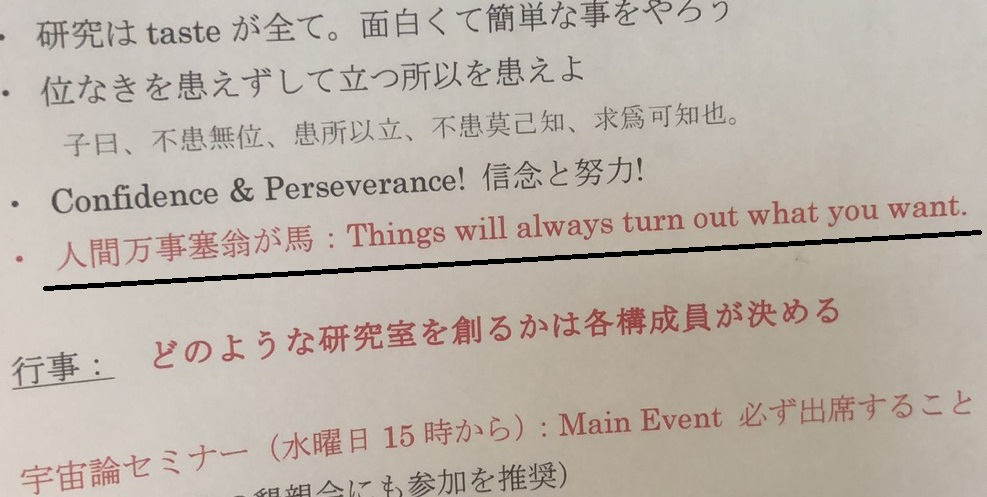

宇宙学
宇宙学是一门物理和天文相互交叉的学科，与天体物理学不同的是，当我们说宇宙学，我们是在说研究宇宙作为一个整体的发展和演化。
我在硕士期间做的是引力方面的形式化理论，那是非常有趣的一次尝试，我了解到很多现代高能理论的面貌，也充分培养了我初步的科研能力，直到今天都受益于此。与此同时我对我们现在所处的宇宙的问题也产生了非常浓厚的兴趣，我想尝试通过理论解释我们现实宇宙的各种问题，这与我之前研究的一些结构问性题非常不同。所幸的是，我通过努力申请到了奖学金，来到的早田老师的组里，开始了我宇宙学方面的研究。
由于我担心跨越方向的鸿沟，我选择了有着与高能物理所需相同的基础知识（广义相对论和量子场论）的一个方向，即暴胀理论。我的博士只有短短的三年，起步较晚，也走了不少弯路，使得我对于物理的理解非常浅薄，但也许就像早田老师最喜欢的谚语所说，「塞翁失马焉知非福」。

↑↑↑ 每个新学年都会收到的研究室简介，这是2023年的